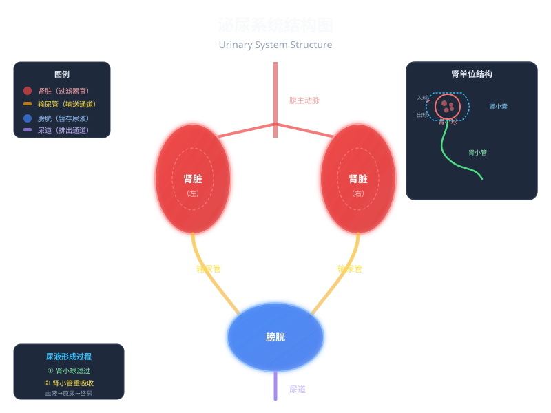

Interactive Canvas
肾单位滤过与重吸收模拟
拖拽左侧的物质分子，观察它们在肾小球和肾小管中的不同命运。
将左侧分子拖入肾小球区域，观察滤过结果
每天喝进去的水，经过什么样的"过滤工厂"变成了尿液？

先选一个你关心的问题。后面的例子、提示和 AI 学伴都会围绕这个问题来帮你推进。
选择或输入后，本课会围绕你的问题展开。
下面哪个说法是正确的？凭直觉选一个，暴露你的前概念。
已经知道：人体代谢会产生含氮废物（如尿素），需要排出体外
但是问题是：这些废物溶解在血液中，如何从血液中分离出来并排出？
所以这一段要解决：认识负责这项工作的泌尿系统及其四个组成器官
位于腹腔后壁脊柱两侧，形如蚕豆。是泌尿系统的核心器官，负责过滤血液、形成尿液。每个肾脏约含100万个肾单位。
连接肾脏与膀胱的细长管道，左右各一。通过蠕动将肾脏产生的尿液输送到膀胱。
位于盆腔内，是有弹性的囊状器官。功能是暂时储存尿液，成人膀胱可容纳约300-500mL尿液。
连接膀胱与体外的通道。在排尿反射的控制下，将膀胱中的尿液排出体外。
已经知道：肾脏是形成尿液的器官
但是问题是：肾脏内部到底有什么结构能完成如此精密的过滤工作？
所以这一段要解决：认识肾单位的三个组成部分及其功能分工
由入球小动脉分出的毛细血管球。血液在此被高压"挤"过滤过膜，小分子物质（水、葡萄糖、尿素、无机盐）进入肾小囊，而血细胞和大分子蛋白质被拦截。
包裹在肾小球外面的双层囊状结构，像一只手捧着毛细血管球。收集从肾小球滤过的液体，形成原尿。
与肾小囊相连的弯曲细管，外面缠绕着毛细血管网。负责把原尿中的有用物质（全部葡萄糖、大部分水和部分无机盐）重新吸收回血液。
尿素（CO(NH₂)₂）是蛋白质代谢的主要含氮废物，也是尿液中最主要的溶质。拖拽旋转查看其分子结构。
💡 拖拽旋转分子，滚轮缩放。尿素分子量仅60Da，远小于蛋白质(>10000Da)，因此能通过肾小球滤过膜。
拖拽左侧的物质分子，观察它们在肾小球和肾小管中的不同命运。
已经知道：肾单位由肾小球、肾小囊和肾小管组成
但是问题是：血液是如何一步步变成尿液的？哪些物质被留下，哪些被排出？
所以这一段要解决：掌握滤过作用和重吸收作用的具体过程
场所：肾小球→肾小囊
过程：血液流经肾小球时，在血压作用下，除血细胞和大分子蛋白质外的物质都滤过到肾小囊中。
产物：原尿（约180L/天）
原尿成分：水、葡萄糖、氨基酸、尿素、无机盐等
场所：肾小管→毛细血管
过程：原尿流经肾小管时，全部葡萄糖、大部分水和部分无机盐被重新吸收回血液。
产物：终尿（约1.5L/天）
终尿成分：水、尿素、无机盐（无葡萄糖和蛋白质）
| 成分 | 血浆 | 原尿 | 终尿 |
|---|---|---|---|
| 蛋白质 | 7.2% | 微量 | 0 |
| 葡萄糖 | 0.1% | 0.1% | 0 |
| 尿素 | 0.03% | 0.03% | 1.8% |
| 无机盐 | 0.9% | 0.9% | 1.1% |
| 水 | 90% | 97% | 95% |
💡 注意：尿素在终尿中浓度大幅升高（60倍），因为大部分水被重吸收了。
原尿中含有葡萄糖，但正常人的终尿中不含葡萄糖。这是因为：
肾脏就像一个精密的污水处理厂：肾小球是初级滤网（滤过），肾小管是回收车间（重吸收），最终只有真正的废物被排出。
从进化角度看，肾脏的
小明体检时尿检报告显示"尿蛋白 +++"（即尿液中含有大量蛋白质）。根据你学到的知识，最可能是哪个结构出了问题？ 填空：肾单位由____、____、____三部分组成。血液流经肾小球时，除____和____外，其他成分都可以过滤到肾小囊中。 小明体检发现尿液中含有葡萄糖，请分析可能的原因（至少两种）并说明理由。 透析患者的肾脏已丧失功能，需要定期“血液透析”。请结合尿液形成原理，解释透析机必须模拟肾脏的哪些功能？为什么透析不能完全替代肾脏？ 错误认知：“肾小管也能过滤血液” 正确理解：滤过只发生在肾小球，肾小管只做重吸收（把有用物质收回血液） 错误认知：“肾小囊中的液体就是最终排出的尿液” 正确理解：原尿还含大量葡萄糖、氨基酸等有用物质，必须经肾小管重吸收后才成为终尿 错误认知：“排尿就是排泌” 正确理解：排泌是分泌物排出（如汗、唯液）；排泄是代谢废物排出（如尿素、CO₂），排尿属于排泄 现在你能回答了：喝进去的水，经过肾脏中约200万个肾单位的精密过滤和重吸收，最终只有约1%变成了尿液排出体外。这个"过滤工厂"每天处理约180L原尿，却只排出1.5L终尿。 本节点的前置、后续和同域知识由标准知识图谱模块自动渲染。
Posttest
临床应用：尿检异常分析
想想正常情况下蛋白质应该出现在哪里？
Tiered Practice
分层练习
Level 1 基础巩固 ⭐
答案：肾小球、肾小囊、肾小管；血细胞、大分子蛋白质
Level 2 能力应用 ⭐⭐
参考：①肾小管重吸收功能障碍，无法完全重吸收葡萄糖；②血糖浓度过高（糖尿病），原尿中葡萄糖含量超过肾小管重吸收能力
Level 3 迁移挑战 ⭐⭐⭐
提示：思考滤过+重吸收两步、浓缩功能、内分泌功能（产生促红细胞生成素等）
⚠️ Common Errors
易错点警示
❗ 混淆“滤过”与“重吸收”
❗ 误以为“原尿=尿液”
❗ 混淆“排泌”与“排泄”
✏️ 马上练一题
下列哪种物质正常情况下不会出现在原尿中？
想想肾小球的滤过作用只拦截什么？
Summary
回到最初的问题
Knowledge Graph
知识图谱